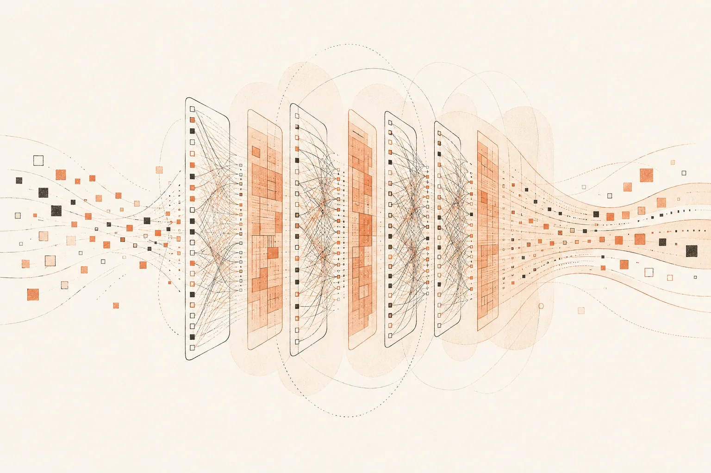

Learning · LLMs
Notes toward understanding language models.
-
CS336Language Modeling from Scratch
Building LLMs end-to-end: data, tokenization, architecture, training, scaling, inference, evaluation.
Lectures 0 / 15
- Lecture 1 — Overview & Tokenization
- Lecture 2 — PyTorch, einops, resource accounting
- Lecture 3 — Architectures & hyperparameters
- Lecture 4 — Attention alternatives & MoE
- Lecture 5 — GPUs & TPUs
- Lecture 6 — Kernels, Triton, XLA
- Lecture 7 — Parallelism (1)
- Lecture 8 — Parallelism (2)
- Lecture 9 — Scaling laws (1)
- Lecture 10 — Inference
- Lecture 11 — Scaling laws (2)
- Lecture 12 — Evaluation
- Lecture 13 — Data: sources & datasets
- Lecture 14 — Data: filtering, dedup, mixing, synthetic
- Lecture 15 — Mid/post-training: SFT & RLHF
Assignments 0 / 5
- Assignment 1 — Basics